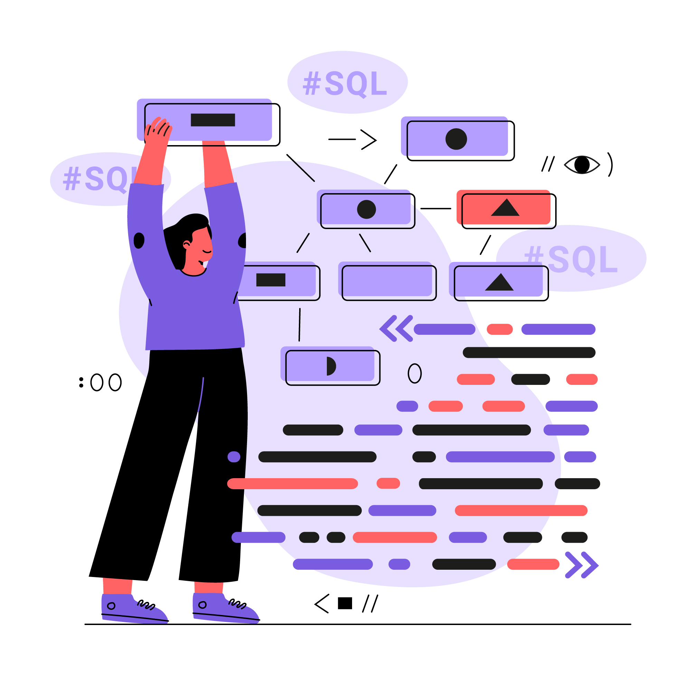
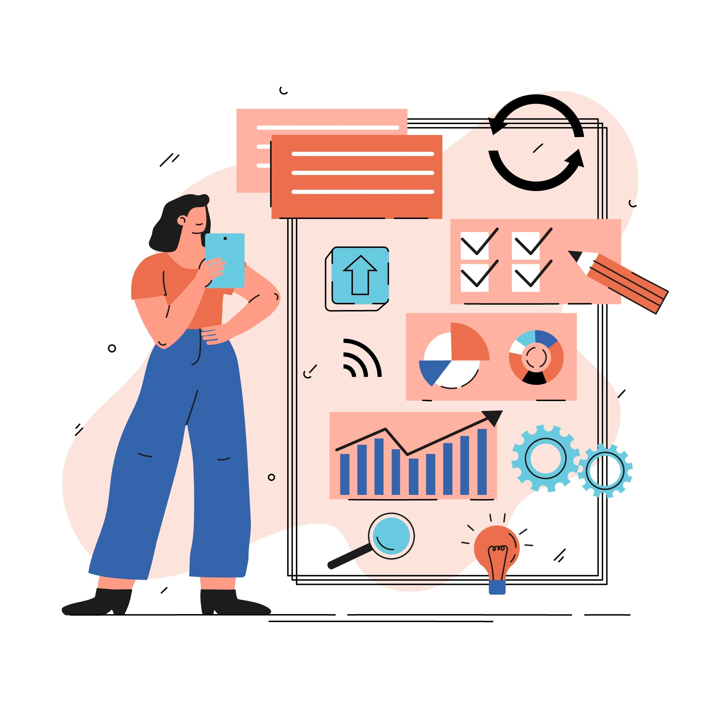

اختر مجالًا لاستعراض المهن المرتبطة به
الصحة
 التعليم
التعليم الهندسة
 الفن
الفن التقنية
 الأعمال والإدارة
التعليم الفنمعلممرشد طلابيفنان تشكيليمصمم جرافيكهو المسؤول الأول عن تشخيص الأمراض ووصف العلاج المناسب، وهو عنصر أساسي في الحفاظ على صحة المجتمع. يتطلب هذا المجال دراسة معمقة، وصبرًا كبيرًا، وروحًا إنسانية عالية، حيث يتعامل الطبيب مع حالات صحية متنوعة وحساسة
✨نصيحة: إذا كنت تحب خدمة الناس، لديك رغبة في التعلم المستمر، وتمتلك قدرة على التعامل مع الضغوط، فإن مهنة الطب خيار رائع لك. استعد لدراسة طويلة لكن مجزية جدًا
يقدم رعاية مباشرة وشاملة للمرضى، يعمل جنبًا إلى جنب مع الأطباء لضمان تقديم خدمات طبية فعالة. الممرض هو يد الطبيب التي تنفذ الرعاية اليومية وتحافظ على راحة المرضى
✨نصيحة: إذا كنت شخصًا رحيمًا، صبورًا، وتحب العمل ضمن فريق، فإن التمريض يوفر لك فرصة لتكون جزءًا هامًا من النظام الصحي مع فرص تطوير مستمرة
الجراح متخصص في إجراء العمليات الجراحية التي تنقذ حياة المرضى أو تحسن من جودة حياتهم. يتطلب العمل دقة عالية، تركيزًا، ومهارات تقنية متقدمة
✨نصيحة: هذه المهنة تتطلب تدريبًا طويلًا وتطوير مهارات يدوية عالية. إذا كنت تتحمل الضغط ولديك اهتمام بالتفاصيل، الجراحة ستكون مجالًا مجزيًا للغاية
المعلم هو أساس بناء المجتمعات، ينقل المعرفة ويشكل مهارات الأجيال القادمة. يتطلب العمل فهمًا جيدًا للمادة، صبرًا، وابتكارًا في طرق التعليم
✨نصيحة: إذا كنت تحب التواصل مع الآخرين، ولديك شغف لنقل المعرفة، فكر في تطوير مهاراتك التربوية لتصبح معلمًا مؤثرًا وملهمًا
المرشد الطلابي يساند الطلاب في مواجهة التحديات الأكاديمية والنفسية، ويوجههم لتحقيق النجاح والتوازن في حياتهم
✨نصيحة: إذا كنت تستمع جيدًا، تمتلك مهارات تواصل عالية، وترغب في مساعدة الآخرين على النجاح، فهذه المهنة تناسبك
مهندس البرمجيات يصمم ويطور أنظمة الكمبيوتر والتطبيقات التي تسهل حياة الناس. العمل يتطلب مهارات تحليلية وبرمجية متقدمة
✨نصيحة: إذا كنت تحب حل المشكلات، والعمل على تطوير حلول مبتكرة، تعلم البرمجة بجد واجتهد في تحديث مهاراتك باستمرار
المهندس المعماري يصمم المباني والمساحات التي تجمع بين الجمال والوظيفة، ويهتم بجودة البيئة العمرانية.ة
✨نصيحة: إذا كان لديك حس فني وابتكار، وتهتم بالتفاصيل، فكر في تطوير مهارات الرسم والتصميم واستخدام برامج التصميم الحديثة
يعمل مهندس الميكانيكا على تصميم وصيانة الآلات والأنظمة التي تدعم الصناعة والنقل والطاقة
✨نصيحة: إذا كنت تحب الفيزياء والرياضيات، وتمتلك مهارات تقنية، هذه المهنة تقدم فرصًا واسعة في مجالات متنوعة
الفنان التشكيلي يعبّر عن الأفكار والمشاعر من خلال الرسم، النحت، أو التصوير. يستخدم الألوان والأشكال ليعبّر عن رؤيته الفنية
✨نصيحة: طوّر مهاراتك الفنية، وشارك في المعارض، وكن دائم الاطلاع على المدارس الفنية المختلفة لتوسيع آفاقك
مصمم الجرافيك يصنع تصاميم بصرية جذابة تساهم في نقل الرسائل بطريقة فعالة ومبتكرة
✨نصيحة: تعلم برامج التصميم، وكن دائمًا محدثًا بأحدث الاتجاهات في التصميم لتتمكن من المنافسة في السوق
المبرمج يكتب الأكواد ويطور البرمجيات التي تساعد الشركات والأفراد في أداء مهامهم بكفاءة
✨نصيحة: ركز على تعلم لغات برمجة متعددة، وشارك في مشاريع حقيقية لتعزيز مهاراتك العملية
يحمي مختص الأمن السيبراني البيانات والأنظمة من التهديدات والهجمات الإلكترونية
✨نصيحة: تعلم أساسيات الشبكات وأنظمة التشغيل، وكن دائمًا على اطلاع بأحدث تقنيات الحماية
المحاسب مسؤول عن تسجيل وتحليل البيانات المالية لضمان الشفافية ودعم اتخاذ القرارات
✨نصيحة: اهتم بالتفاصيل، وتعلم استخدام برامج المحاسبة، وطور مهارات التحليل المالي
المسوق يطور استراتيجيات ترويج المنتجات والخدمات لزيادة المبيعات وبناء علاقة مع العملاء
✨نصيحة: تعلم مبادئ التسويق الرقمي، وكن مبدعًا في التواصل مع الجمهور
يدير شؤون الموظفين، ويعمل على تطوير بيئة العمل وتحفيز الفريق
✨نصيحة: طور مهارات التواصل، وفهم القوانين والأنظمة المتعلقة بالعمل، وكن منفتحًا على حل النزاعات